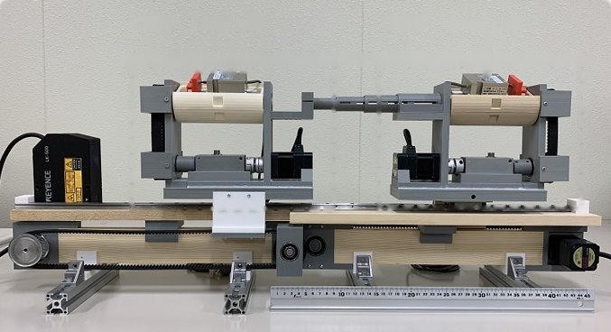

Academic bedside robots · southeast_jin2024
MR-fluid platform
Southeast University / Kagawa MR-fluid haptic robotic platform with force sensing and guidewire-catheter collaborative operation

1 / 7


- Family
- Academic bedside robots (academic)
- Devices
- guidewire and catheter (guidewire unit GMU, catheter unit CMU)
- Degrees of freedom
- N.R.
- Push
- Linear stage
- Twist
- Rotating clamp
- Tested up to
- Phantom
- Sim-to-real
- None found — No simulation-trained controller found for this robot.
Testing
- Highest level
- Phantom
- What was tested
- Vessel model and EVE endovascular evaluator; sample counts N.R. in the sections read
- Key numbers
- Load cell +/-5 N; stepper 0.36 deg resolution; haptic force 0.4-2.1 N for 0-0.6 A (plot reading)
Mechanism
- Push (translation)
- linear-stage+clamp
- Twist (rotation)
- Synchronous-belt rotation of the grasper (pulley diameter 46.3 mm; belt also used for linear motion)
- Device range
- N.R.
- Target anatomy
- vessel model; endovascular evaluator (EVE) model at 120/80 mmHg
Sensing and interface
- Force sensing
- Total proximal force by TEAC TU-UJ5N load cell (-5 to 5 N) on a lead screw behind the grasper (spring-loaded slider moves slightly under load); torque by torque sensor during rotation; load cell reads positive for guidewire insertion
- Leader and haptics
- MR-fluid haptic leader: two coils (30 mm inner, 120 mm outer diameter, 1200 turns); haptic force rises with current over 0-0.6 A (about 0.4 to 2.1 N, read from the Fig. 5 plot)
- Imaging
- N.R.
- Sterility
- N.R.; grasper contact blocks are rubber-faced and opened by hollow steppers
Size
- Footprint (mm)
- rail with ruler in Fig. 6 photo; size N.R.
- Mass (kg)
- N.R.
Simulation
- Simulation model
- none found
- Sim-trained controller
- none found
Versions
- Lineage
- jin2024_novel (T-IM 2024, received Mar 2023) -> jin2025_natural (T-HMS 2025: leader device with haptic feedback; abstract not read)
Sources
- A Novel Robotic Platform for Endovascular Surgery: Human–Robot Interaction Studies · IEEE Transactions on Instrumentation and Measurement, 2024 · doi:10.1109/tim.2023.3338682 [jin2024_novel]
Notes
- Notes
- Same Kagawa lineage as kagawa_mrf_guo2019 but with a load cell mounted on the grasper slide for proximal force. | 2026-10-13 coordinator: jin2025_natural moved to hanglok_wang2024: its follower is the Hanglok MULLER unit (W4, P2) | 2026-10-13 Q2: latest_year 2025 -> 2024 after jin2025_natural moved to hanglok_wang2024
This record
- Read level
- partial — partial (jin2024 text); abstract (jin2025)
- Picture
- jin2024_novel Fig. 6 (follower manipulator with CMU and GMU), T-IM 2024, doi:10.1109/TIM.2023.3338682 ↗ — licence: publisher copyright; grade C
- Picture changes
- native extract (688x380, the largest copy in the PDF); red dashed unit boxes, 4 labels and 4 arrows removed (OpenCV Telea, colour and darkness masks on the wall and rail); 5 px frame cropped; not upscaled.
- Found by
- academic: Search of academic bedside robots.
- Data
- JSON · YAML:
records/robots/southeast_jin2024.yaml - Correction
- Suggest a correction [repository not created yet]